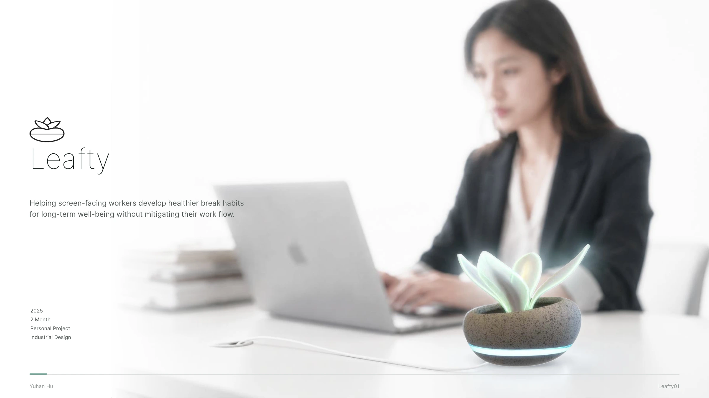
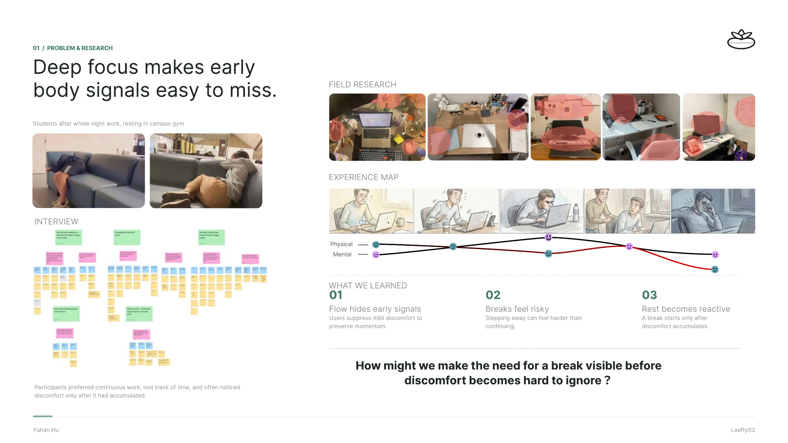
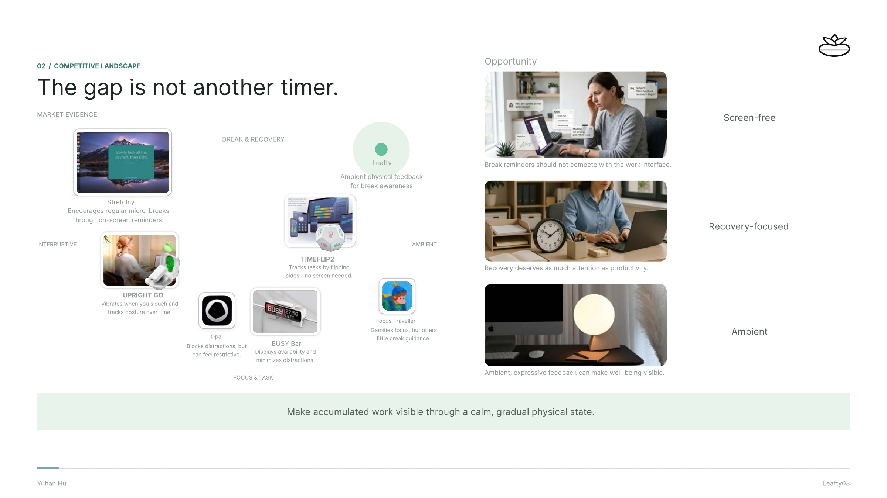
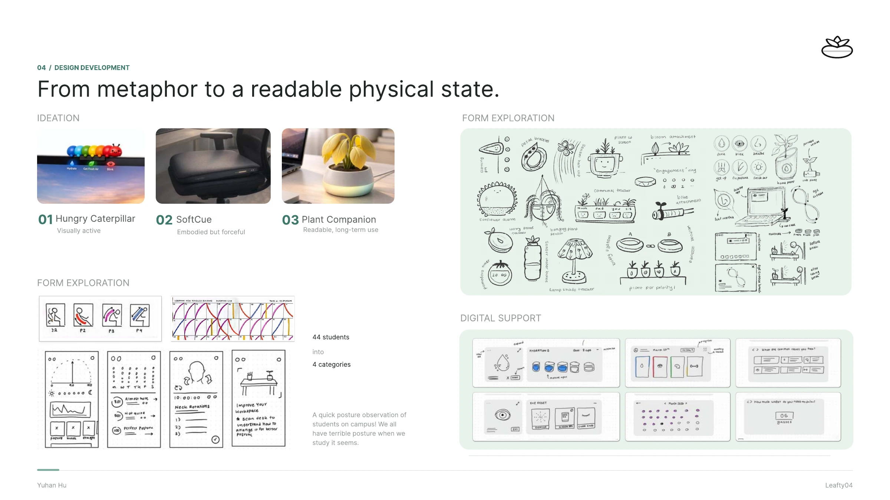
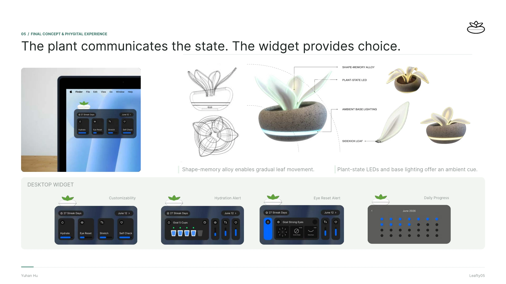

All work
Selected work / 02 · 2025
Leafty
Leafty explores how a plant-like object and a simple desktop widget can help people notice when it’s time to step away from their screens.
View full process



